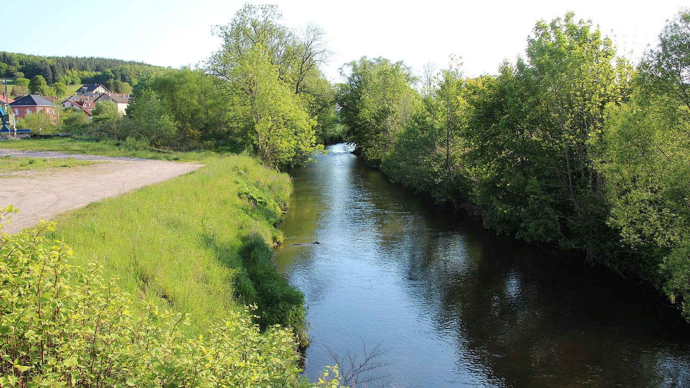

Emmanuel Macron, le bilan
Promesses, réformes, crises et affaires : la présidence passée au crible des faits (2017-2026).
Voir sur AmazonDocuments & enquêtes
Politique • Économie • Société • Affaires judiciaires
Des dossiers documentés qui distinguent les faits établis, les désaccords, les hypothèses et les zones d'incertitude.
34 dossiers publiés, classés par rubrique.
Dossier
Objectif de déficit, effort de 54 milliards, répartition entre dépenses et recettes, avis du Haut Conseil des finances publiques. Données arrêtées au 8 octobre 2026.
Lire le dossierDossier
Enquêtes de l'IGPN sur l'usage de la force, tirs mortels, atteintes à la probité, et limites de ces statistiques. Données arrêtées au 8 octobre 2026.
Lire le dossier
Dossier
Décisions de justice depuis 1984, annulations, prescription et investigations en cours. Données arrêtées au 8 octobre 2026.
Lire le dossierDossier
Méthodes, résultats des études du CEPII et de l'OCDE, origine des chiffres contestés et limites des calculs. Données arrêtées au 8 octobre 2026.
Lire le dossierDossier
Ressources autorisées, remboursement public, réticence des banques et propositions en débat. Données arrêtées au 8 octobre 2026.
Lire le dossierChaque dossier part des pièces disponibles et indique ce qui est établi, ce qui est débattu et ce qui reste incertain.
Rubrique
Pouvoir, décisions publiques, élections, réformes.
Entrer dans la rubriqueRubrique
Dette, retraites, fiscalité, emploi, services publics.
Entrer dans la rubriqueRubrique
Chronologies judiciaires, pièces du dossier, expertises, faits établis et hypothèses.
Entrer dans la rubriqueNotre méthode
Fait établi≠Témoignage≠Interprétation≠Hypothèse≠Proposition
Chaque type d'information est identifié, les sources sont données, les incertitudes sont conservées et les corrections sont publiées.
Lire la méthodeQuand un article ne suffit plus, les livres approfondissent l'ensemble du dossier.
Promesses, réformes, crises et affaires : la présidence passée au crible des faits (2017-2026).
Voir sur AmazonDette, déficit, retraites, dépenses publiques : 17 mesures chiffrées pour agir d'ici 2036. Faits, débats, calculs et propositions séparés.
Voir sur AmazonLes erreurs des premières 48 heures qui ont tout fait échouer. Volume 4 de la collection « Affaires qui ont choqué la France », environ 60 minutes de lecture.
Voir sur AmazonLes faits d'abord. L'opinion reste au lecteur.